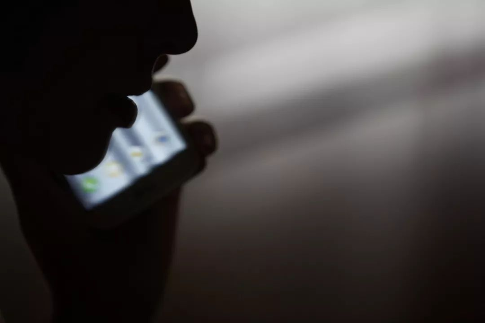
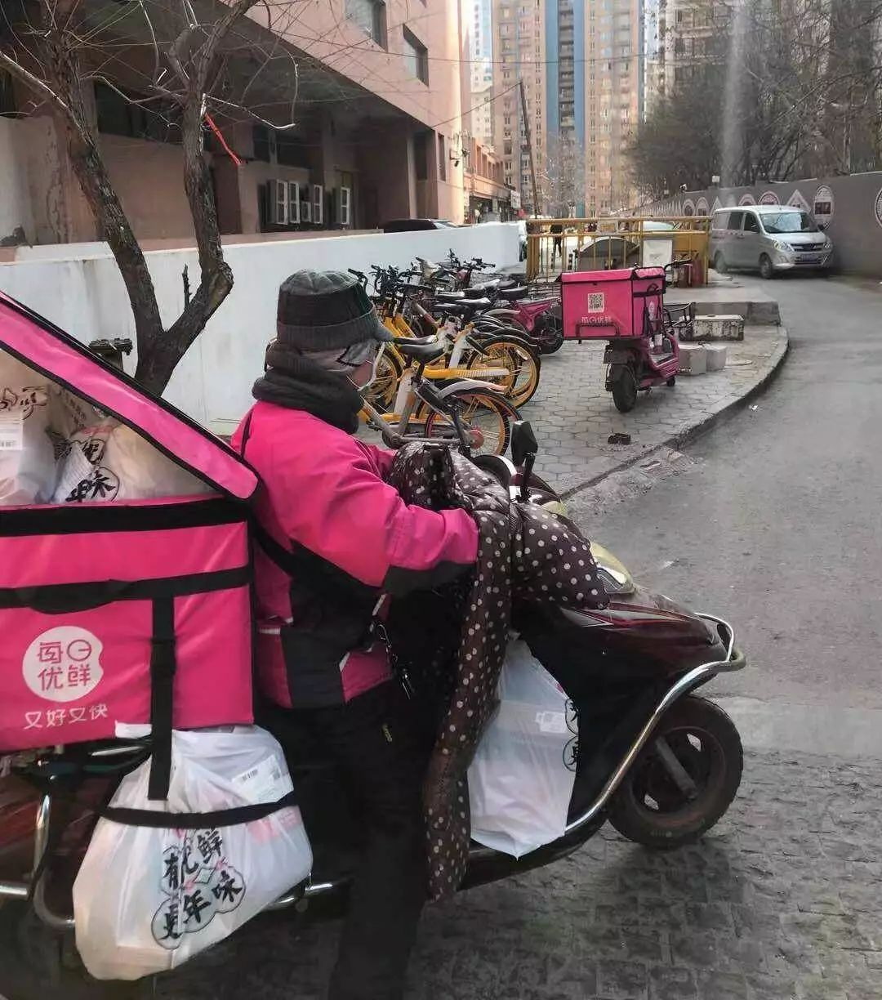

医护人员用文件袋自制护目镜——湖北县镇乡村防疫战
原文链接 备份链接 医疗防护资源不足是常态，各地资源调配需平衡，“灯下黑”区域渐次光亮，但少数地区的疫情宣传依旧不到位 外地务工返乡者最担忧的问题是年后经济收入断流、地域歧视，担心节后可能无法返工 本文首发于南方人物周刊 文 | 本刊记 …

《战疫口述记》，是燃财经在新型冠状病毒肺炎期间推出的特别栏目，记录疫情亲历者的观察和感受。本文为第6篇，查看前5篇请点击《我和公司都快熬不住了》《节后返京，太太太南了》《我的“流浪”春节》《农村这样防肺炎》《我在武汉战肺炎》。
作者 | 闫丽娇 孔明明 黎明
唐亚华 苏琦 孟亚娜 金玙璠
编辑 | 魏佳
一场突如其来的疫情，让本应该在春节休息的很多人，继续坚守在了工作岗位。特殊时期，他们成了最美逆行者。疫情仍在蔓延，武汉之外，很多城市加强了疫情防御力度，全民宅在家中，但生活还在继续。
每天的必需品，总要有人送到家中；为减少公共出行，总要有网约车提供服务；物资运输需要车也需要人；而那些被阻隔在外的异乡人，也需要一个临时的庇护所。在这个春节，许多陌生人为奋斗在一线的医护人员送去关怀，也有无数送餐员和快递员冒着风险承接温暖，将线上的“加油”变成线下的行动。
临近春节，口罩需求极速上涨，成都闪送小哥选择留了下来，自费买了2000个口罩给同样坚持工作的兄弟们，并且为医护人员提供免费医疗用品配送；武汉疫情开始严重，滴滴武汉医护保障车队还在不停为医护人员提供接送服务；为了给滞留客人和医护人员一个临时落脚处，有酒店老板劝走员工，自己还在坚持营业……
如果不是疫情，我们可能对这些服务已经习以为常。其实他们早已成为城市正常运转不可或缺的一环，在我们最需要时，总有人逆风坚持。
今天，我们记录下这8个普通人的故事。
***每天接触医护人员***
***感觉自己就在一线***
张禹家 29岁 武汉锦汉商务酒店老板
武汉封城后我们酒店的订单全部退了，只留下两位滞留的客人。考虑到风险，我让员工全部放假回家，我一个人留守。后来看到新闻报道武汉疫情很严重，很多小视频里医护人员在哭，我妈妈看到视频也跟着一起哭。由于市内交通也被封了，有护士到协和医院上班步行得两个小时，我心里很不是滋味。
正好网上有几百家酒店发起了免费给医护人员提供住宿的活动，我们酒店就在武汉市第一医院、武汉市第四医院、同济医院、协和医院中间，我看了一下已报名的医院基本没有我们这片区域的，可能因为离医院近，风险比较高。我就决定把酒店开了免费给医护人员住。
大年初一开始，就有人入住了，我这边住的都是协和医院的医护人员，总共提供了51间房，基本是一间房一个人。我自己把前台、卫生、开门接待都包了，工作量不算很大，就是熬人。
每天白天我要打扫整个公共区域的卫生，喷消毒水。因为医护人员的上下班时间不一定，24小时都有人进出，我得随时给他们开门，平均每晚上都要起来五六次。这些天我基本就待在前台、大厅，没睡过完整的觉，有机会就眯一会。我基本24小时戴口罩，耳朵都被“拉到前面”来了，有一次我做梦都戴着口罩。
疫情是很严重，我也很担心，但其实在酒店开放一两天之后，我越来越放心了。虽然他们是高危人群，但入住之后，对我的保护做得特别好。医护人员基本上跟我没有交流、接触，有时候看到我在前台吃饭，会主动离得再远一点，也不在公共区域停留，从房间出来就去上班，一直都戴着口罩。进来的时候，我需要核对身份看一下他们的证件，他们给我时会用自己备的消毒水消完毒再给我。

图 / Pexels
我经常能看到有人晚上过来，刚上去没多久，接到电话又往外跑；也听到有人跟家里视频，说自己要报名调往协和西院一线，家里人不同意，她说武汉现在这个情况，所有人都要去一线的；还有一对夫妻都是协和医院的，住一个房间，后来丈夫跟我发微信说他要被调到一线，担心传染给妻子，想要单独分一个房间给他。
近距离的接触他们之后，真的感觉他们很不容易，加了这些人的微信后，我每天看他们发的朋友圈，感觉自己就在一线。
说实话，我一个青壮劳力在家里窝着也待不住，这个时候我能出一点力就想出一点。我能看到武汉的疫情是真的严重，我们酒店门口是三面玻璃，整个小区的情况看得一清二楚。每天我都能看到小区有人被拖出去，听到外面路上救护车的声音，这种情况下我觉得我做点什么都比窝在家里强，也许我在家更焦虑。
我就想着医护人员能休息好，能更好保护他们自己，也有更多的精力去救治病人，疫情也能够尽快结束。这个春节，酒店经营上“惨不忍睹”，但是对我个人来说我觉得辛苦但有意义。
***这个时候，******我们不上谁上呢？***
熊伟 36岁 滴滴武汉医护保障车队司机
我是外地人，但和家人在武汉定居，本来今年春节我准备好好休息、带家人出去旅游。我之前是名地产经纪人，做网约车司机有一年左右。
腊月二十九，我收到滴滴招募司机的通知，立刻报了名，当时想着能尽一部分社会责任，除夕那天，我们去领了装备，包括护目镜、 防护服、口罩、手套等。
在接送医护人员时，遇到很多感人的事情。记得有一天我送一名护士进隔离病房，她丈夫送她去医院的时候，满眼泛着泪花，他说他们家有两个小孩，大的七岁，小的两岁不到，有很多担心，但那名护士说，这个时候，我们不上谁上呢？当时对他们肃然起敬。

图 / Pexels
我们车队大约有200人，每天早上6点左右出门，晚上10点后收工，平均每天接10单左右，医护人员在滴滴上有专门的打车通道。在上岗之前，我们都经过了专门的培训，严格按照实际情况对自己进行防护，口罩、防护服、手套、护目镜都会穿戴，车辆在接触一个人之后也会立刻消毒。这样做不仅是对自己负责，也是对医护人员和家人负责。
家人当然会担心我，说不担心都是骗人的，但他们也表示理解。我现在不在家睡觉，平台给我们安排统一住宿的地方，正月初七我甚至自己自费住了酒店。也不是所有司机都会这样，但像我这种家里有老人和小孩的肯定不行，因为我们每天都跟高危人群接触，即便任务结束也要隔离14天才能回家。这些在接受车队任务前我已经都做好了准备。住的地方不能做饭，每天要么吃便当，要么吃泡面和零食。
既然社会有需要，虽然我不是武汉本地人，但武汉算是我的第二家乡，应该为家乡尽自己的绵薄之力。有些事情总需要人做，身边的很多人和事也在鞭策着我继续坚持下去。看着医护人员每天一脸疲惫的下班，我觉得我有责任和义务将他们安全送回家。
现在武汉的确诊人数依然在增加、医护人员奋斗在一线、物资依然极度缺乏。我们只是很小的一部分人，最辛苦的还是在病房里工作的一线护士和医生。他们也都是别人的丈夫、爸爸、儿子、女儿、妈妈，有的现在却连最基本的防护都得不到。
希望大家能够早日度过难关。我们的家人还在等着我们回家，千千万万的家庭还在等着团聚。
*****以前做事为了自己*****
*****今天做点不一样的*****
杨俊 33岁 滴滴武汉医护保障车队司机
我今年本来计划在武汉过春节，初四左右回老家走亲戚。
1月23日下午五点，朋友给我转发了滴滴招募车队司机的微信群截图，问我有没有收到消息，当时要求是下午三点半之前报名。我之前没看到消息，后来又去找滴滴的人，居然报上了。
最开始上线时，是通过人工派单，26日下午三点，滴滴上线了专门给医护人员的通道，可以开始系统派单。加入保障车队其实没想太多，就是想做点自己能够做的事情，开车送人本来就是我每天的工作。
 杨俊与接送医护人员的合照 来源 / 受访者
杨俊与接送医护人员的合照 来源 / 受访者
我知道有一个司机为了加入车队，专门从老家赶回来，是我们这里面的跑单王。虽然平台有统一安排住宿，但他有时候会太忙，经常工作到很晚，直接在自己的车里休息，很辛苦。我们看了也挺心疼。我现在住家里，独自一个房间、自行隔离。
面对疫情，家人肯定担心，但开始接医护人员后，他们表现的特别专业，对于防护消毒都很小心仔细，下车前把自己能接触到的地方都喷上消毒水。我跟家人说，我们每天接送医护人员的安全系数其实挺高，家人也会慢慢理解。
接第一位乘坐的医护人员时，她在车上突然问我贵姓，我随口说自己姓杨，没想到自己名字居然在她朋友圈里出现了，非常感动。前期我在车上会跟医护人员聊聊天，现在很少聊了。因为有一次接医护人员下班时，车里放了音乐，突然我发现医护人员睡着了，从那以后我在医护人员上车后，顶多打个招呼，不去打扰他们，如果他们睡着的话，导航的声音我都会全部关掉，让他们好好休息。
 医护人员发朋友圈感谢杨俊 来源 / 受访者
医护人员发朋友圈感谢杨俊 来源 / 受访者
在我出任务之前，电视里面所出现的画面几乎都是我们感觉不到的，只会感觉医护人员很辛苦、很忙，但自从开始接送医护人员后，感觉到电视里面的人物形象，变成了活生生的人出现在自己面前。
自己这么多年做事都是为了自己，今天做了点不一样的事儿，哪怕跟电视上那些人比起来少之又少，但多少有些价值。况且这件事情总要有人去做，我只是他们其中的一员。

***大家默默不说话、减少接触***
***但又彼此需要、彼此支持***
陈建 28岁 城市便捷酒店六渡桥店店长
我们酒店目前接待的是武汉第一人民医院的医护人员，还有街道的社区医院的医护人员，大概有50多人。
封城前，我们酒店自愿留了5个人守店，两个前台，两个保安，还有我。我是店长，今年28岁，两个前台比我年纪还小，大家也都不是湖北本地人，春节期间大家都一起住在酒店里面，为医护人员提供服务。
我们仅有一人会做饭，就拿一些酒店厨房储存的库存弄点东西吃，慢慢的就没什么青菜了，大多都是一些冷冻食品，除夕夜那天就吃了一天饺子。上个月物资比较紧缺，后来区域经理及东呈总部湖北战区领导和街道办事处配备了一些物资，缓解了部分压力。
白天我们志愿者会主动配合区域给各门店送物资，然后回到店面帮忙，一般要忙到晚上12点，很多事情都需要随时线上沟通，电话24小时开机，随时都可能有事情，同城兄弟门店有需要物资的，我们志愿者小组都会第一时间对接及配送。
医护人员也比较注意，尽量不跟我们接触，有需要的东西就在微信群里和我们说，我们把东西放大厅，他们自己去领，一些生活垃圾，他们自己上班时就带走了，也不让我们碰，他们也在尽量减少我们的工作量。现在市内也不让开车，他们就骑单车或走路上下班。
图 / Pexels
很难想象，这么大一个酒店，大家都默默的不说话，减少接触，但又彼此需要、彼此支持、彼此关心，有的时候甚至会有一种家的感觉。
家里人每天都要叮嘱我别出门，我没有实话实说，因为目前的形势真的很危险，天天和这些医护人员接触，也加大了交叉感染的可能性，只能骗他们说我在出租屋里休息。有一次我们去运送物资，微信的步数有上万步，晚上就被我爸妈看到了，立马一个电话打过来问我怎么到处乱跑。我只能说我在家里做运动、锻炼身体，好说歹说才让他们相信了。
我们接待的医护人员，有的是跟集团对接的需求，有的是跟社区对接的需求，也有医生自己打电话过来预约的。这样的需求其实非常大，24小时电话不停的轰炸，我们能提供的也有限，尽可能的把服务做到位，但很多时候都觉得自己做的还不够。
说实话心里也害怕，我每天要接触很多人，只能尽可能地去做好防范，我也得保障我们店里工作人员的安全，剩下的我们5个员工，得一直撑到整个城市解封之后，才有更多的人手回来帮忙。
我现在只能把班安排的稍微轻松一点。之前是12个小时轮着值班，这样的话人是受不了的，也可能导致太累而抵抗力下降。后来我们就根据医护人员的作息排班，加上区域的志愿者帮忙顶班。晚上10点到早上7点，基本没人能进出酒店时，就让区域志愿者或保安值班，不安排前台，白天换前台上。有了区域志愿者的帮助，店面员工也可以得到休息。
我只是尽自己所能，给城市提供一些帮助。都到这个时候了，每个人都得奉献自己的力量，我能做的也就是为医护人员提供住宿，让他们安心的在一线为病人治疗。希望武汉病情能早点得到控制，整个城市能快点正常运转起来。

*****非常时期的订单*****
*****一定是急用的，我必须送*****
朱大贵 50岁 达达快送骑士
大年初一（1月25日）早上10点左右，我看到平台上挂着两个由餐馆配送到武汉武昌医院的订单。骑士不接医院订单是免责的，这个医院又是武汉中心城区发热患者定点医院。两个订单一直挂着，没有人接。
我电话沟通后才知道，这两单是远在浙江的网友给武汉武昌医院的医生、护士点的外卖。他们通过网络看到武汉一线医务人员的年夜饭连口热饭都没有，想出这一招，嘱咐我自行分配给医院的医护人员。我想，素不相识的网友都这么好心，这两单我必须送到。
等我赶到餐馆，老板刚要取消订单，因为迟迟没人接单，订餐量又大，50杯豆浆、30份煎饺，等候时间很长。我说，“你尽管做，不要紧，我等着。”
120急救中心、接诊大厅测体温处、挂号处、发热门诊、药房这些地方，我一袋一袋送完才从医院跑出来。我说明原委，医生护士们双手合十表示感谢，我只能不断地说：“我只是代劳的。”
最近平台上的订单，多数是医药用品和蔬果。有次给一个发热的客户送药，对方电话里说：“我有点不舒服，你最好不要接触”，我马上就懂了，我们现在每天按照公司规定出门做好防护，进家做好消毒，平台也推出了无接触配送服务。还有次我给一个客户送药，小区门口的保安不让进，客户说，没买到口罩，不能出门。这类事情我已经见怪不怪了，小区有小区的规定，客户有客户的难处，我们只能两边说好话。

图 / 视觉中国
昨天（1月31日），一个客户指定要买某个超市的青菜，但已经售罄了，我视频通话给他看了超市的情况，他说，“那麻烦你帮忙想想办法。”市场都关门了，我就到社区附近去碰运气，结果真的找到了小商贩，最后把客户点名要的菜送到了他的手上。
因为疫情，这段时间平台上的订单很少，多数是零散又难跑的单。去年这个时候，我每天接50单以上，跑的也比较轻松，现在一天跑20多单，东一单西一单，一天跑160公里左右，电动车每天要换两次电池。老婆、儿子都不希望我非常时期出来跑，说实话，我也不在乎那几个钱，但是非常时期的订单一定是急用的，所以我一直在平台上挂着，只要有单我就接，能帮忙送就帮忙送，能代买就去买。
最近很多客户专门打电话过来表达感谢，说“不敢相信现在还有骑手在送”，我才发现自己做的事情原来有这么大价值。到2020年，我来武汉30年了，遇到的99%的人都是善良的，我想我会一直送下去。

*一些事情发生的时候*
*我立马想到作为军人的使命*
黄巍 80后 成都闪送小哥
今年本来是打算回老家的，但是大年三十前，爆发了疫情，就没有回去了。闪送没有加班一说，都是自由制的。临近春节当时有很多客户委托我去帮他们买口罩，我感觉到疫情的严重性，选择留了下来。刚开始有一些人觉得我是在作秀，但这些天身边的很多兄弟姐妹，陆续都加入到我的队伍中了。我们都希望能够尽自己力所能及的事情，帮这个城市做一些事情。
这段时间是医疗物资比较短缺的时候，社会上有一些人自愿捐给医院的医疗用品，医生们也有一些想闪送回家的生活用品，我都是免费帮他们配送的。
 图为黄师傅的闪送车辆 来源 / 受访者
图为黄师傅的闪送车辆 来源 / 受访者
我觉得目前来看，一线人员的心态还是比较好的。在这种时候，如果你过于紧张，会给别人造成影响。我在送客户订单的时候，都是带着笑容。
家里人对我很担心，但我觉得只要做好防护，没什么问题。特殊时期，大家对物资配送的需求量非常大，总需要有人去做这些事。况且考虑到疫情传播的危险性，由我们小部分人来为大家跑腿，总比大多数人都在外面跑好。
年前我自费囤了2000个口罩，今天（接受采访当日）没有跑单，专门负责监督骑手们的防护，给他们送口罩。特殊时期，大家其实都非常担忧，我能做的是尽力保障他们的安全。公司也给我们很大的支持，给我们做了一些疫情防护知识培训。
除口罩之外，我们会佩戴保护头盔，而且身上也会准备酒精，一天下来我会洗5-7次手。这段时间口罩、酒精和一些食品的需求量非常大，我们和一些商家互相帮助，他们给我们提供防护物资，作为回报，我们免费给他们配送物资。配送过程中，我们会尽量避免和客户产生接触，做好随时消毒的防护措施。
我现在每天工作10个小时以上，大多都是免费的配送订单。春节结束后，我可能会简单调整一两天，但其实我觉得没有特别累。让我坚持做这件事最大的动力，是责任感。作为一名退役军人，虽然我现在脱下军装了，但每当看到别人发生一些事情的时候，还是会立马想到自己作为军人的使命。武汉加油，中国加油！

***我是一个普通配送员***
***但我体现了自己的价值***
刘成江 46岁 每日优鲜配送员
我是每日优鲜在天津的一名配送员。今年春节，每日优鲜不打烊，我没有回老家，整个假期都在配送。
因为疫情的原因，大家都不出门了，超市的蔬菜水果涨价，所以很多人都通过每日优鲜这样的电商平台来买菜买水果。从初二初三开始，我们站点的订单量一下暴增。出去送货的时候，我一次最多可以接28单，电动车上挂的到处都是，货架、扶手、踏板，全部都挂的是货，每天回家基本都是十点以后。
来源 / 受访者
我每天早上七点到店里，公司会给我们发口罩、手套、消毒液，出发前要给车辆消毒。但是疫情还是给我们的配送带来了困难。有时候到小区门口，保安大哥不让进，这个时候通常是打电话让客户自己下来拿，但有时候客户也不下来，所以有时候会僵在这里。
我有一个客户是外国人，我给他送了三年了。对方不会中文，之前每次配送，都是当我到楼下了，我拨一下他的电话，他给我按电梯，然后我送上楼去。但是春节期间，他的小区不让配送员进去，他对这个情况不知道。我给他打电话，打了三四回，他不知道要下楼来拿。最后没办法，我让我们站长编辑了一个英文短信，我发给对方，对方才下楼来拿。
我的老家是辽宁沈阳的，在天津十多年，在每日优鲜工作四年。今年春节，一方面是想要趁着假期多赚点钱，另外我觉得公司需要我的时候，我应该站出来，因为春节期间公司人手紧张。
这段时间，公司每天发两到三个口罩，让我们量两次体温。我们确实是冒着生命危险在配送，因为你不知道送货的过程中会接触什么人。如果跟生命相比，这点钱确实不算什么。但工作毕竟还是需要有人去做，社会不能因为疫情就停止正常运转。跟一线的医生相比，我们的危险要小得多。我虽然只是一个普通的配送员，但我觉得在这种关键时刻，我体现了自己的价值。
每天早上，我骑着电动车出去送货的时候，看到街上都没几个人，其实我的心里还是挺不好受的。我希望通过所有人的努力，让这种状态尽快过去。我所做的事情对于社会而言可能是微不足道的，我可能也起不了太大作用，但是当客户对我们所做的事情，表示理解和赞赏的时候，我心里就有很大的力量。
这段时间，很多客户给我打赏，每次送货送到了，客户都会说谢谢辛苦了。还有客户问我有没有口罩，从家里拿出口罩送给我。每当这个时候，我就觉得有一种力量在支持我们继续走下去。

***不能让战士饿着肚子去打仗***
周师傅 48岁 货拉拉平台司机
我是湖北孝昌人，目前定居武汉，是货拉拉平台上的认证司机。春节前武汉封城，我就加入了货拉拉支援武汉的救援队伍，一直在一线工作。当地很多医院的食堂员工在外地回不了武汉，生活物资又短缺，而且随着救援人员的加入，医院工作人员的就餐成了一个问题。我这几天负责协和医院的餐食运送。
1月29日，货拉拉开始与武汉的连锁便利店Today合作，为武汉40多家医院免费运送餐食。如有战，召必回，我从那天开始随时待命。后来我加入了货拉拉武汉爱心司机支援群，现在志愿司机已经108人了。
我每天早上六点多钟起床，从家里到取餐地黄陂再到协和医院，需在武汉跨越几个区。早上要预留两三个小时来应对限行和出餐点排队轮候、拥堵的问题。为医院运送完餐食后，我还要去运送别的物资。
运送的第一批救援物资是给同济医院的防护服，最远是给孝感的医院送防护服。平均每天要跑2-3趟，有时跑4-5趟。没地方吃午饭，想吃泡面也没开水，中午只能吃点饼干。但是我知道，怎么也不能让一线的战士饿着肚子打仗，我早到一点，医院的人就能早些吃到饭菜。
我是个人司机，武汉禁行，我本来是不能私下参与运送物资的。货拉拉负责与政府部门沟通，拿到配送通行证，然后将配送任务派发给我们，我们这些司机就根据订单需要去完成定向的物资配送。

图 / 视觉中国
我的家人都在武汉，还有一个小孙女。为了做好自我防护，我每天都穿防护服，车上备着酒精和消毒水，车辆每天消毒2到3次。数不清每天洗多少次手，只知道手都洗得开裂了。我还在车上放了一个睡袋，我跟家里人说，如果自己被感染，就睡车上，不回家了。
我觉得一线的医护人员才是真正的战士，不能让他们饿着肚子。所以即便在春节假期，我也一直在一线工作，在现场配送物资。即便是封城了，我们也要去做点什么，没有理由退缩。
*题图源于视觉中国。
线索征集：在疫情之下，各行各业都要陆续面对生产和经营中更大的困难和挑战。燃财经希望各企业和创业者们与我们联系，提供关于企业如何应对疫情不利影响的新闻线索，让更多人了解到疫情之中企业的现状。请在评论区留言或在后台私信我们，内容包括“您目前所在的行业、您的大致应对情况、您的联系方式（微信号或电话）”，我们在经过筛选后会第一时间联系您，也请务必保证信息的真实、客观。

你身边还有哪些“逆行者”？你想对他们说些什么？
欢迎在评论区留下你的故事，我们会在点赞前三（超过20个）的评论里挑选一位网友，送出腾讯视频季卡一张。文章转载请点击公众号菜单“转载合作”。
一手资讯/硬核报告/每日红包/线下活动！就差你了！快加微信rancaijing01回复“读者”一键上车！


燃财经工作室
点个在看吧😘
微信扫一扫赞赏作者 赞赏
长按二维码向我转账
点个在看吧😘
受苹果公司新规定影响，微信 iOS 版的赞赏功能被关闭，可通过二维码转账支持公众号。
原文链接 备份链接 医疗防护资源不足是常态，各地资源调配需平衡，“灯下黑”区域渐次光亮，但少数地区的疫情宣传依旧不到位 外地务工返乡者最担忧的问题是年后经济收入断流、地域歧视，担心节后可能无法返工 本文首发于南方人物周刊 文 | 本刊记 …
原文链接 备份链接 武汉市已将所有捐赠物资集中统一调配，这有助于物尽其用，但配送效率亟须提升。这几日陆续有社会捐赠物资送到武汉协和医院，但仅有一线医护人员能穿上防护服，很多医用物资仍然紧缺 文 |《财经》 …
原文链接 备份链接 转眼之间，武汉封城，已有九日。绝大多数人都闭门在家时，一些还在为城市运送物资和生活用品的人，在尽其所能保障着城市的基本运转。如果把现在的武汉比喻成一具遭受病毒侵袭的人体，他们就像是人体里细小密集的毛细血管，努力延续着这 …
原文链接 备份链接 武安医生（化名）所在的医院是孝感市三家抗疫医院之一。距离武汉66公里的孝感是距离武汉最近的地级市，截止到1月28日上午，有确诊病例173例。与暴风眼武汉一样，以孝感为代表的武汉周边小城也正在经历着决战时刻。 坐诊之 …
原文链接 备份链接 新型冠状病毒疫情像是一场突如其来的阴霾，在这个冬天笼罩了华中大地。相较于最受关注的武汉市民，周边城市的人们，像是处在阴霾边缘，遭受侵袭，却又不常被看见。面对重重困难，孝感、黄冈、黄石、信阳、荆州、天门……各个城市的百姓 …